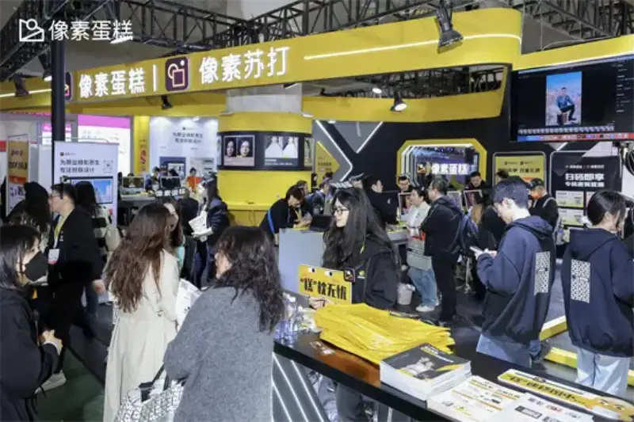
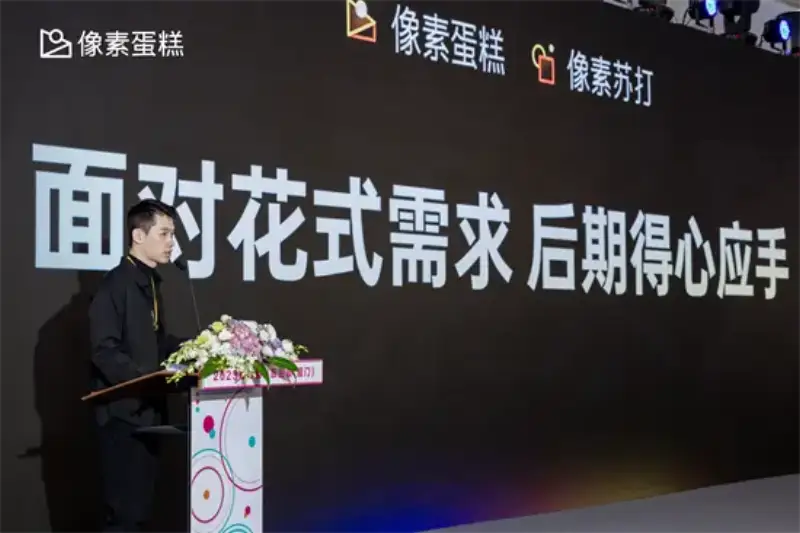
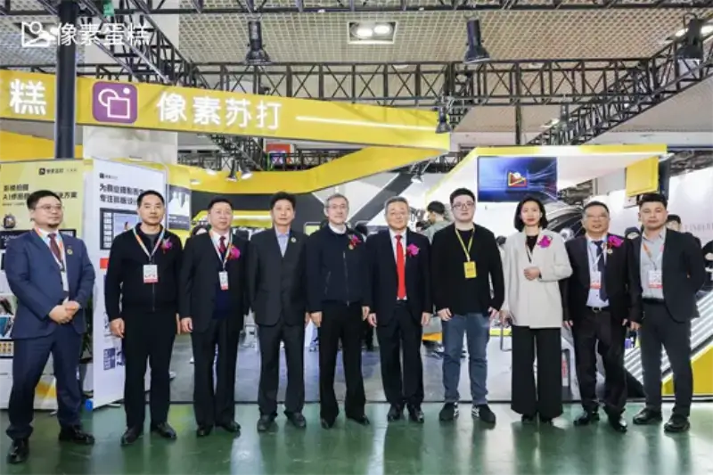
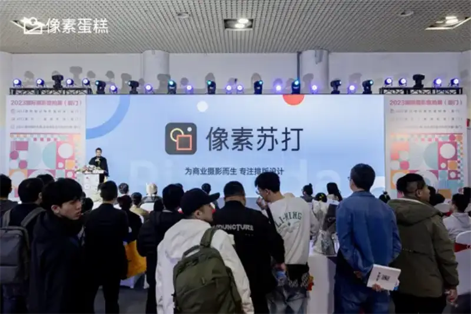

Published: 2023-12-21
Source link: https://www.cnphotos.net/academy/show-163.html
From December 17 to 19, the 2023 International Travel Photography Expo opened in Xiamen. As a major year-end event for the commercial photography industry, it drew wide attention from brands at home and abroad. This time, Pixel Cake appeared with a new version and breakthrough features, and once again brought groundbreaking, cutting-edge technology.

Technology drives a new level of efficiency in the commercial photography workflow
On the morning of the 18th, the Pixel Cake team opened the program with a standout talk and presented a feast of leading-edge technology. The upgraded Pixel series made a striking debut. Its features cover tethered shooting, detailed retouching, design and layout, and more. It drives a full overhaul of the commercial post workflow and lifts both quality and efficiency.

During the expo, the upgraded Pixel Cake booth became the crowd favorite thanks to strong product features and professional advisory service. Industry leaders and senior experts also came to visit. The great experience of trying the new features led many to say that professional color grading could be this easy. Praise from many sides kept adding to the lively mood.

The only self-developed Raw engine in China today
Unlock color expression in post-processing
According to the staff on site, both Pixel Cake and Pixel Soda received major upgrades. Pixel Cake recently launched new features such as AI Color Grading and Local Color Grading. Powered by its self-developed Raw engine, it calibrates tone and applies a style in one step, for better grading results. It also supports separate grading of the subject and the background, which is flexible and efficient.
Pixel Cake is said to be the only software maker in China today with the core technology of a Raw engine..With its proprietary algorithm, it supports 16-bit color depth for adjustment and output,so it can edit and export finished work at higher quality,keeping high-fidelity detail and a wide color reproduction,and giving you more post-creation room than a normal 8-bit photo..
Breakthrough features and hard-core technology appeared one after another. Pixel Soda launched its proprietary AI Design feature offline for the first time, offering a layout experience that is quick to learn and free to create. It matches creative layouts to the photo content and completes album design efficiently. It helps designers escape a tedious workflow and give their time back to creation.
Worth noting, Pixel Cake also prepared a series of custom gifts for the offline event. Surprises kept arriving in Xiamen, and they drew old and new friends to come and see. Many benefits and gifts kept the excitement going. The tethered-shooting zone, with shoot, retouch, and select in one step, won steady praise and wave after wave of visitors.
A turning point: change is underway in commercial photography
From Watt improving the steam engine hundreds of years ago, to new AI technology opening a new era, the advance of technology has always driven human society. When we turn the lens to commercial photography, we see a new chapter slowly opening as the industry upgrades digitally and technology keeps empowering it.
Based on its long-term focus on commercial photography, the Pixel series launched Pixel Soda, smart design and layout software for the AI era, aimed at album design. It offers a solution for post-production layout in commercial photography and makes professional layout simple and efficient. Today, Pixel Soda already lets designers move smoothly between steps with strong product quality. In the future, backed by the dual productivity solution of AI retouching plus AI design, the commercial post workflow will quickly raise quality and efficiency across the board.

As a pioneer in AI retouching, Pixel Cake has always let user needs drive the product. It keeps innovating features, exploring leading technology, and staying true to self-developed technology, to give the commercial photography industry a more professional, efficient, and human post solution. In the future, Pixel Cake will stay close to market needs, use its ongoing lead in innovation to build a new foundation for commercial post-production, and unlock new business potential for the industry.